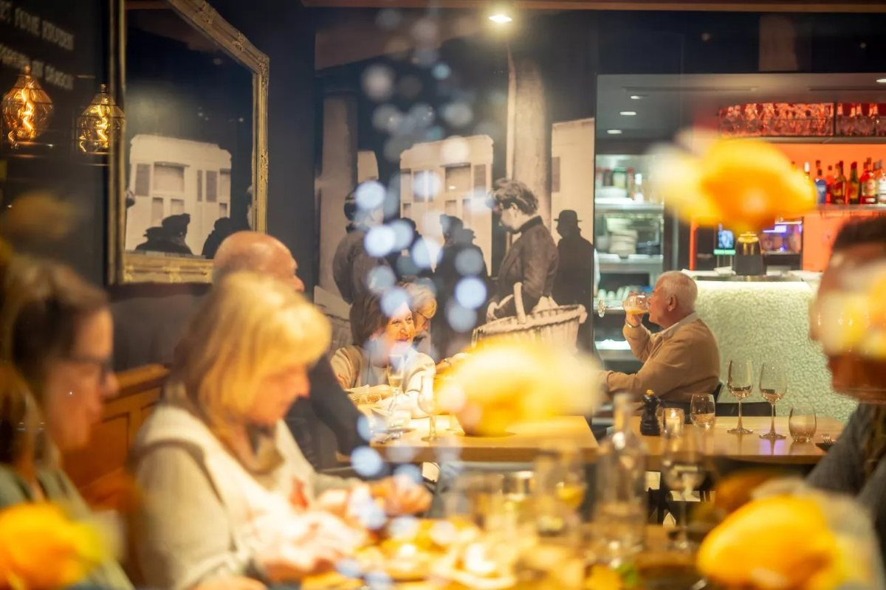
| 営業時間 | 木〜火 11:30〜22:00（営業時間ポータル表記。公式は「水曜定休」のみ明記） |
|---|---|
| 定休日 | 水曜 |
| 住所 | Breidelstraat 24, 8000 Brugge |
| 予約 | 推奨 — ☎ +32 50 33 97 46 ／ 公式サイト |
| 乳児連れ | ベビーカー入店 未確認／ハイチェア 未確認／おむつ替え台 未確認 |
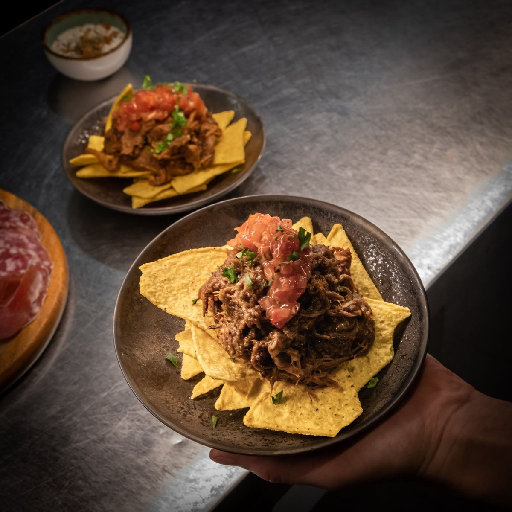
| 営業時間 | 金〜火 昼・夜営業（Gault&Millau 表記。時刻は公式に記載なし） |
|---|---|
| 定休日 | 水曜・木曜 |
| 住所 | Walplein 3, 8000 Brugge |
| 予約 | 推奨 — ☎ +32 50 34 12 45 ／ 公式サイト |
| 乳児連れ | ベビーカー入店 未確認／ハイチェア 未確認／おむつ替え台 未確認 |
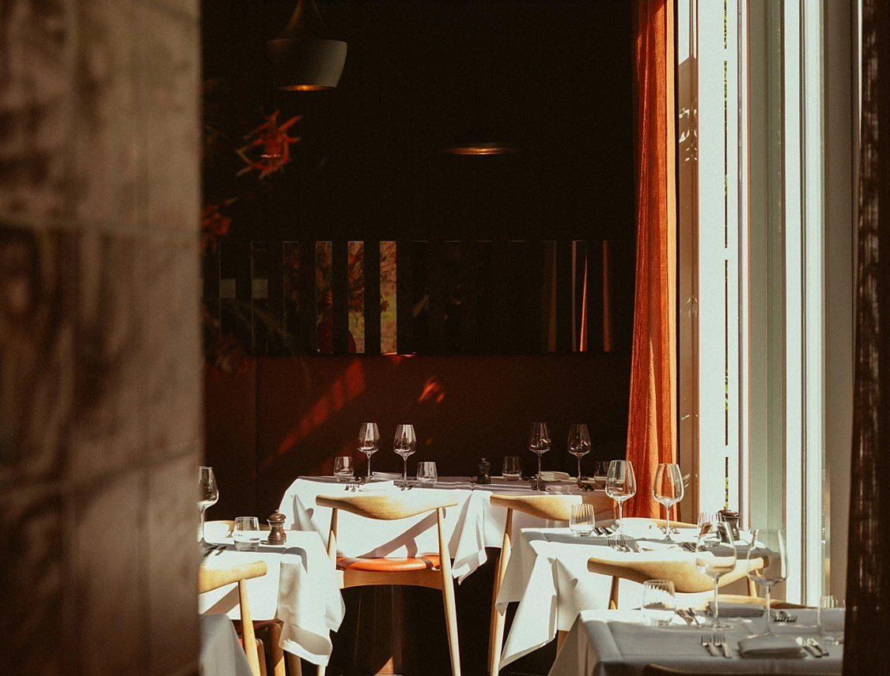
| 営業時間 | 火〜土 12:00〜14:00／18:30〜22:00（公式・Gault&Millauで昼夜営業） |
|---|---|
| 定休日 | 日曜・月曜 |
| 住所 | Molenmeers 2, 8000 Brugge |
| 予約 | 推奨 — ☎ +32 50 44 49 00 ／ 公式サイト |
| 乳児連れ | ベビーカー入店 未確認／ハイチェア 未確認／おむつ替え台 未確認 出典 |
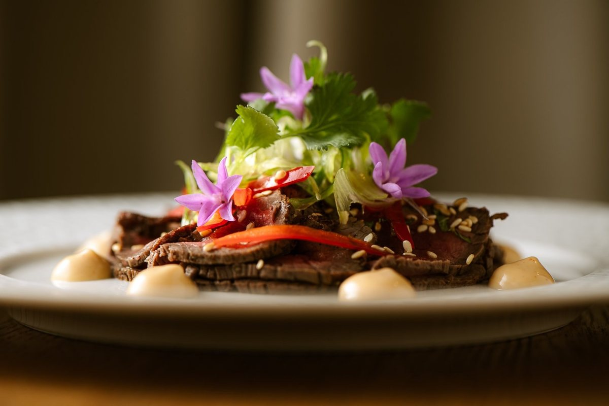
| 営業時間 | 月 12:00〜13:00／18:30〜20:30、木 12:00〜13:00、金・土・日 12:00〜13:00／18:30〜20:30（入店時間） |
|---|---|
| 定休日 | 火曜・水曜（木曜夜も休み） |
| 住所 | Philipstockstraat 23-25, 8000 Brugge |
| 予約 | 推奨 — ☎ +32 50 34 00 94 ／ 公式サイト |
| 乳児連れ | ベビーカー入店 未確認／ハイチェア 未確認／おむつ替え台 未確認 |
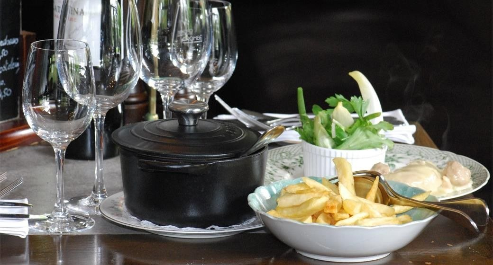
| 営業時間 | 水〜月 11:00〜22:00（料理は 12:00〜14:30／18:00〜22:00） |
|---|---|
| 定休日 | 火曜 |
| 住所 | Oostmeers 130, 8000 Brugge |
| 予約 | 推奨 — ☎ +32 468 03 37 87 ／ 公式サイト |
| 乳児連れ | ベビーカー入店 未確認／ハイチェア 未確認／おむつ替え台 未確認 |
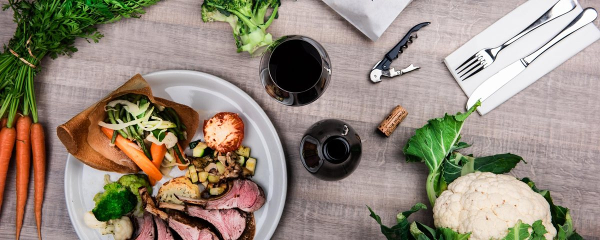
| 営業時間 | 火〜土 12:00〜14:00／18:00〜21:00（キッチン） |
|---|---|
| 定休日 | 日曜・月曜 |
| 住所 | Sint-Amandsstraat 4, 8000 Brugge |
| 予約 | 推奨 — ☎ +32 50 34 01 22 ／ 公式サイト |
| 乳児連れ | ベビーカー入店 未確認／ハイチェア 未確認／おむつ替え台 未確認 出典 |
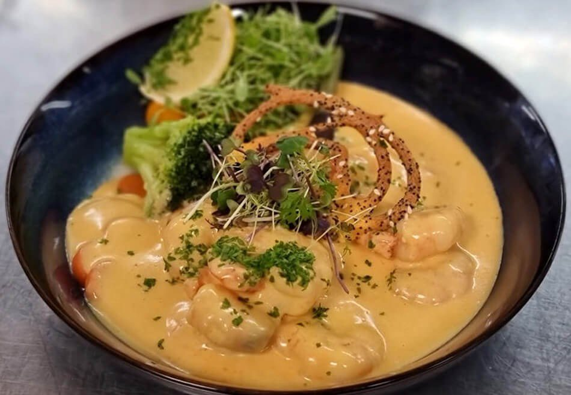
| 営業時間 | 公式: 日〜金 11:00〜21:30、土 8:00〜21:30（営業時間ポータルは火・水休みと表示し食い違い） |
|---|---|
| 定休日 | 公式は無休表記／ポータルは火曜・水曜休（要確認） |
| 住所 | 't Zand 20, 8000 Brugge |
| 予約 | 推奨 — ☎ +32 50 34 17 50 ／ 公式サイト |
| 乳児連れ | ベビーカー入店 未確認／ハイチェア 未確認／おむつ替え台 未確認 |
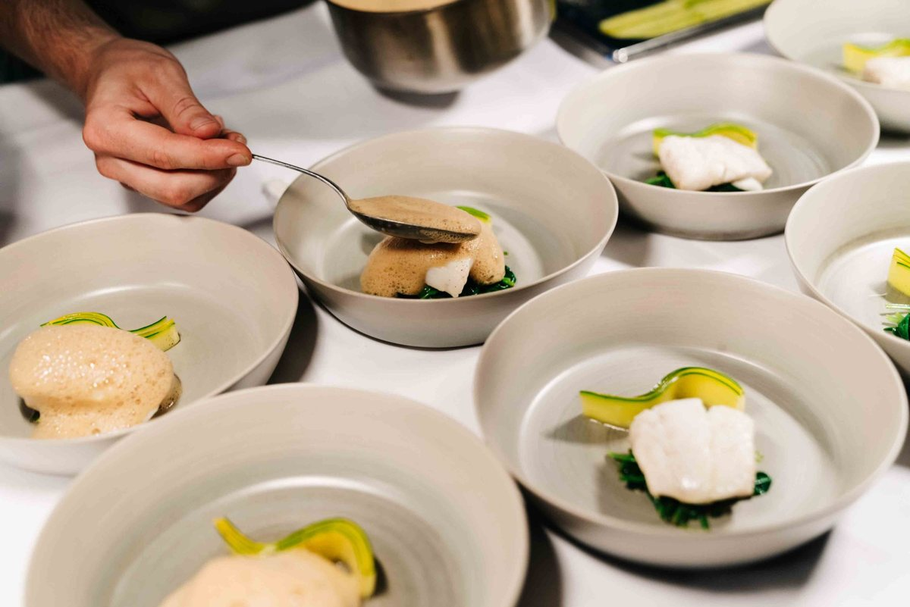
| 営業時間 | 月・火・金・土 12:00〜（LO 13:30）／19:00〜（LO 20:30） |
|---|---|
| 定休日 | 水曜・木曜・日曜 |
| 住所 | Langestraat 159, 8000 Brugge |
| 予約 | 要 — ☎ +32 50 67 83 10 ／ 公式サイト |
| 乳児連れ | ベビーカー入店 未確認／ハイチェア 未確認／おむつ替え台 未確認 |
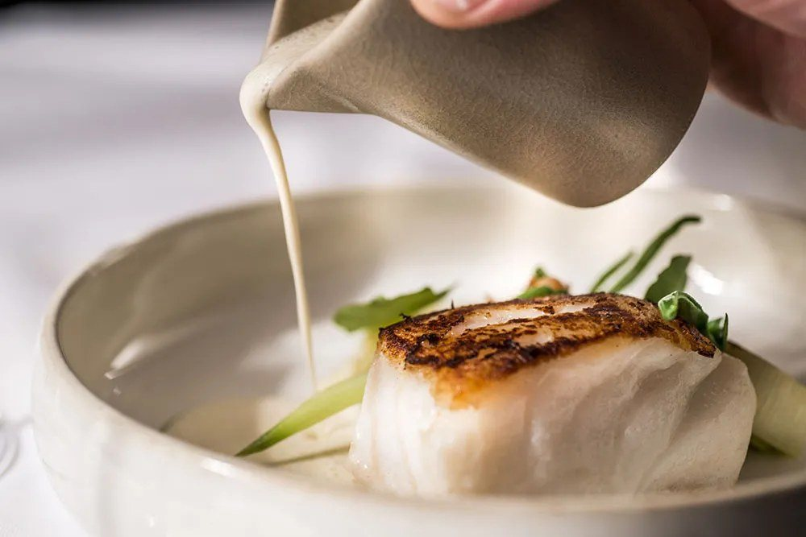
| 営業時間 | 火・水・金・土 昼・夜、木 昼のみ（Gault&Millau 表記。時刻は未確認） |
|---|---|
| 定休日 | 日曜・月曜 |
| 住所 | Langestraat 109, 8000 Brugge |
| 予約 | 推奨 — ☎ +32 50 69 56 48 ／ 公式サイト |
| 乳児連れ | ベビーカー入店 未確認／ハイチェア 未確認／おむつ替え台 未確認 |
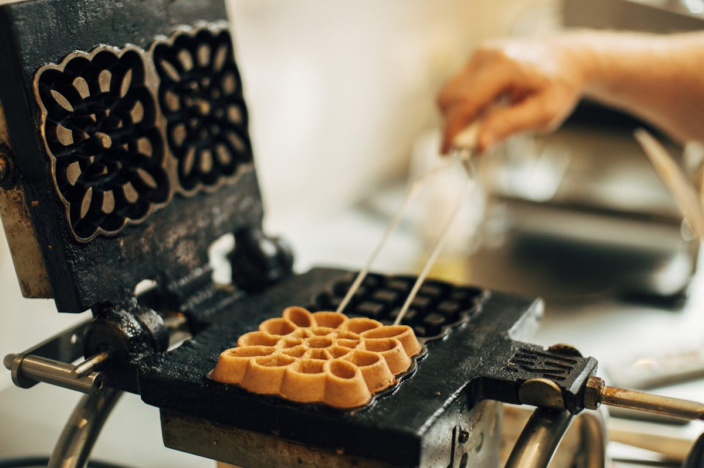
| 営業時間 | 月〜日 10:00〜18:00（公式サイト。臨時の変更は公式トップに告知） |
|---|---|
| 定休日 | なし（無休。臨時休業は公式告知） |
| 住所 | Katelijnestraat 1, 8000 Brugge |
| 予約 | 不可 — ☎ +32 50 65 81 75 ／ 公式サイト |
| 乳児連れ | ベビーカー入店 未確認／ハイチェア 未確認／おむつ替え台 未確認 |
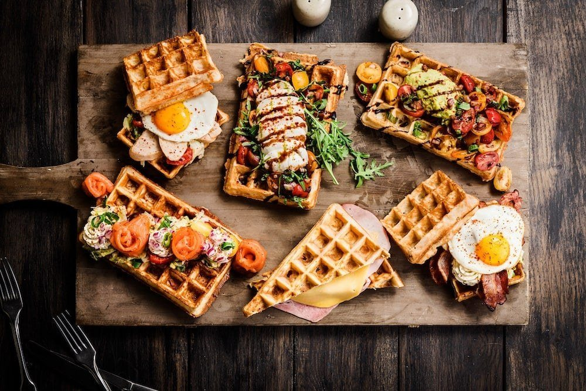
| 営業時間 | 月〜日 11:30〜19:00（公式サイト） |
|---|---|
| 定休日 | なし（無休・公式表記） |
| 住所 | Wollestraat 31, 8000 Brugge |
| 予約 | 不要 — 公式サイト |
| 乳児連れ | ベビーカー入店 未確認／ハイチェア 未確認／おむつ替え台 未確認 |
| 営業時間 | 月〜木 10:00〜22:00／金 10:00〜23:00／土 9:00〜23:00／日 9:00〜22:00（ブレイデル通り店・公式） |
|---|---|
| 定休日 | なし |
| 住所 | Breidelstraat 16, 8000 Brugge |
| 予約 | 不要 — 公式サイト |
| 乳児連れ | ベビーカー入店 未確認／ハイチェア 未確認／おむつ替え台 未確認 |
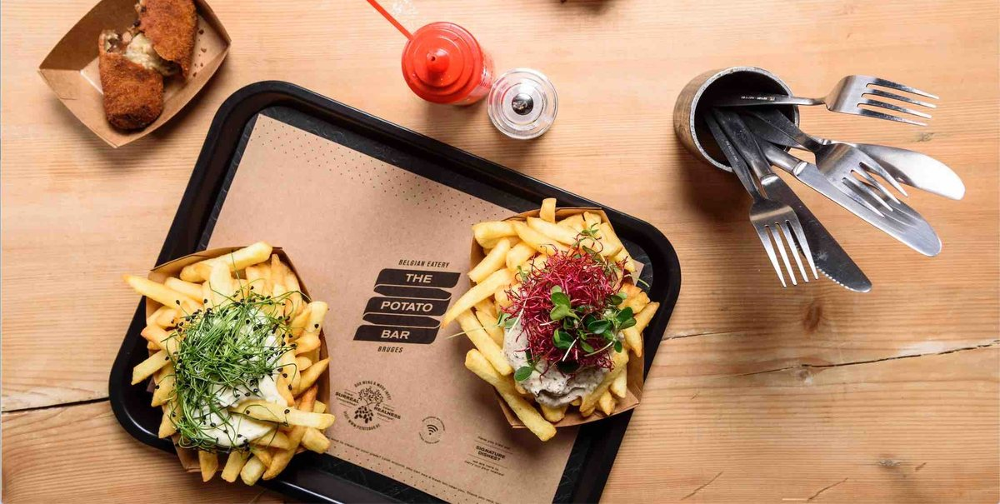
| 営業時間 | 月〜日 12:00〜21:00（公式サイト。キッチン通し営業） |
|---|---|
| 定休日 | なし（公式「every day」） |
| 住所 | Sint-Amandsstraat 31, 8000 Brugge |
| 予約 | 不可 — ☎ +32 50 33 91 19 ／ 公式サイト |
| 乳児連れ | ベビーカー入店 未確認／ハイチェア 未確認／おむつ替え台 未確認 |
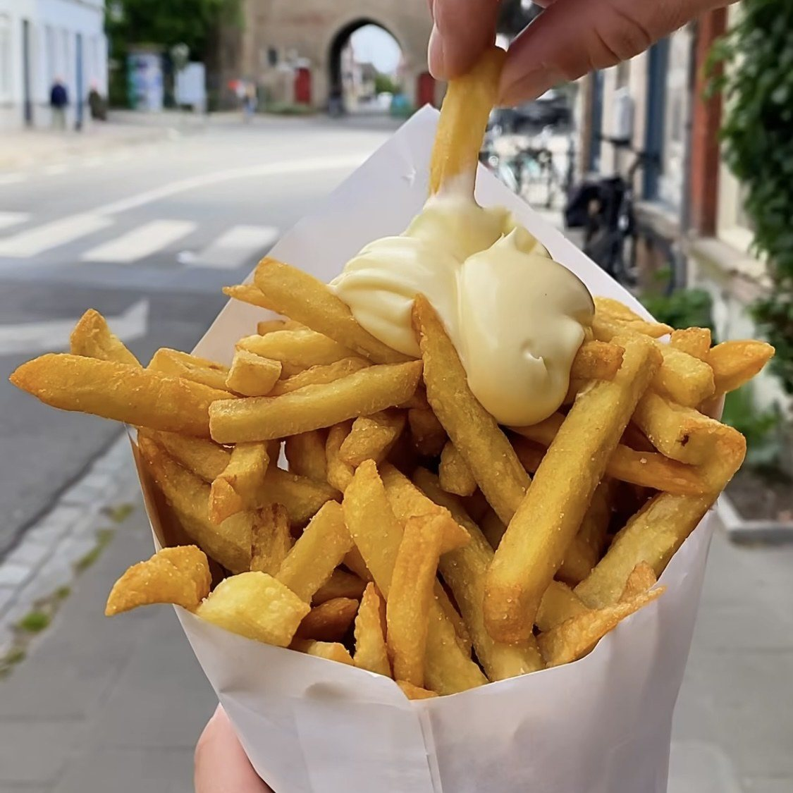
| 営業時間 | 木〜日 11:30〜13:30／17:00〜21:30（公式） |
|---|---|
| 定休日 | 月曜・火曜・水曜 |
| 住所 | Gentpoortstraat 58, 8000 Brugge |
| 予約 | 推奨 — ☎ +32 50 61 34 43 ／ 公式サイト ／ 予約サイト |
| 乳児連れ | ベビーカー入店 未確認／ハイチェア 未確認／おむつ替え台 未確認 |
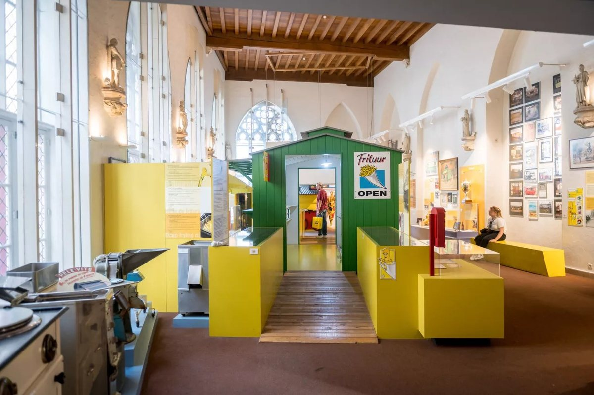
| 営業時間 | 月〜日 10:00〜17:00（最終入場16:15。公式） |
|---|---|
| 定休日 | 12/25・1/1（ほか年初に数日休館） |
| 住所 | Vlamingstraat 33, 8000 Brugge |
| 予約 | 推奨 — ☎ +32 50 61 22 37 ／ 公式サイト ／ 予約サイト |
| 乳児連れ | ベビーカー入店 可／ハイチェア 未確認／おむつ替え台 未確認 出典 |
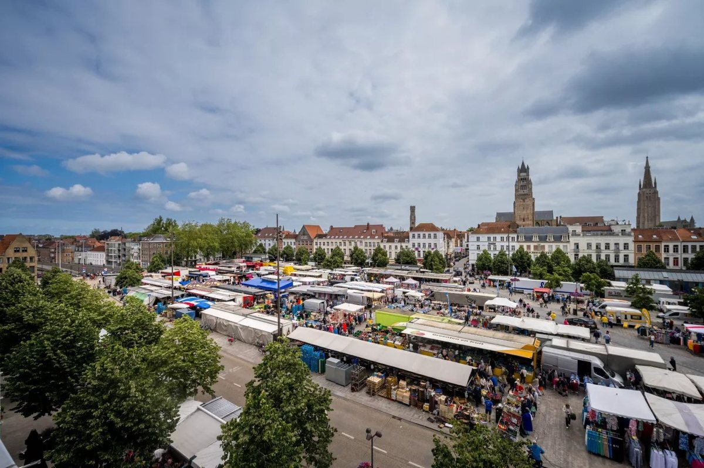
| 営業時間 | 土 8:00〜13:30（12/25・1/1 除く） |
|---|---|
| 定休日 | 土曜以外（市は土曜のみ） |
| 住所 | 't Zand, 8000 Brugge（'t Zand・Vrijdagmarkt・Hauwerstraat 一帯） |
| 予約 | 不要 — ☎ +32 50 44 80 00 ／ 公式サイト |
| 乳児連れ | ベビーカー入店 未確認／ハイチェア 未確認／おむつ替え台 未確認 |
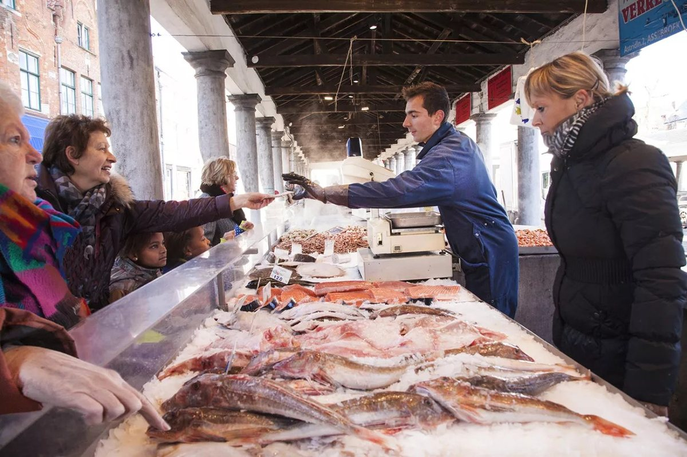
| 営業時間 | 水〜土 8:00〜13:30（魚市。12/25・1/1 除く）／手工芸市は毎日 9:30〜17:00（3/15〜11/15） |
|---|---|
| 定休日 | 日曜・月曜・火曜（魚市） |
| 住所 | Vismarkt, 8000 Brugge |
| 予約 | 不要 — ☎ +32 50 44 80 00 ／ 公式サイト |
| 乳児連れ | ベビーカー入店 未確認／ハイチェア 未確認／おむつ替え台 未確認 |
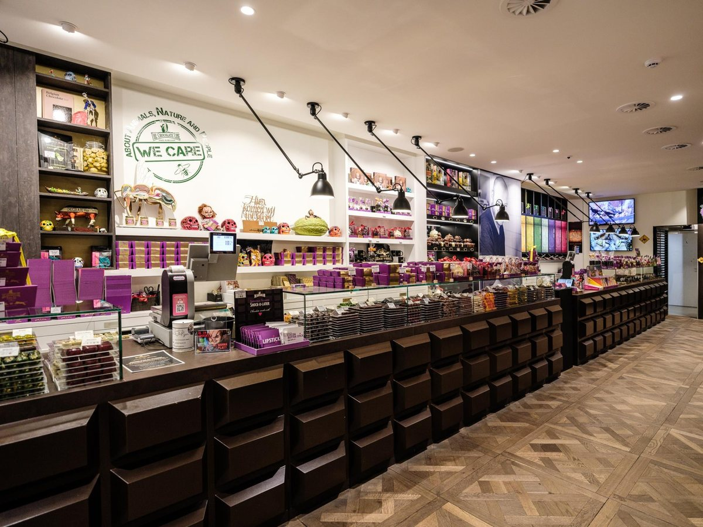
| 営業時間 | 火〜土 9:30〜18:30／日・月 10:30〜18:30 |
|---|---|
| 定休日 | なし（年中無休表記） |
| 住所 | Simon Stevinplein 19, 8000 Brugge |
| 予約 | 不要 — ☎ +32 50 34 10 90 ／ 公式サイト |
| 乳児連れ | ベビーカー入店 可／ハイチェア 未確認／おむつ替え台 未確認 出典 |
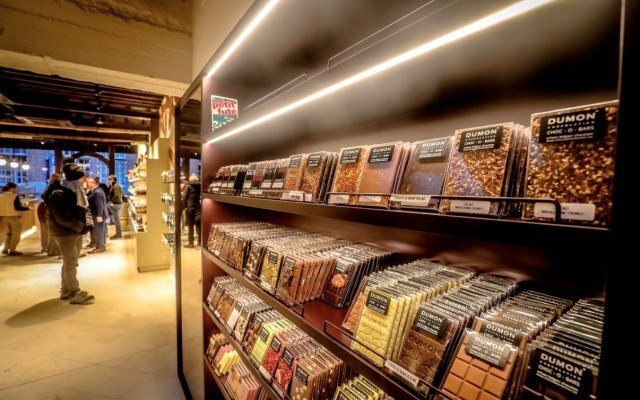
| 営業時間 | 月〜土 10:00〜18:00／日 12:00〜17:00（Eiermarkt店）。Mariastraat 14店：月〜金 10:00〜18:00・土 10:00〜18:30・日 10:00〜18:00／Walstraat 6店：毎日 10:00〜18:00 |
|---|---|
| 定休日 | なし |
| 住所 | Eiermarkt 6, 8000 Brugge |
| 予約 | 不要 — ☎ +32 50 34 62 82 ／ 公式サイト |
| 乳児連れ | ベビーカー入店 未確認／ハイチェア 未確認／おむつ替え台 未確認 |
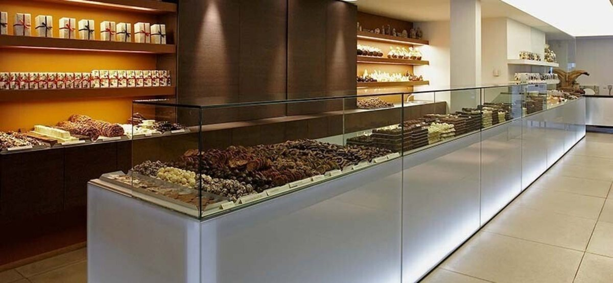
| 営業時間 | 毎日 10:00〜18:00（公式サイト「7/7」表記。サイトは2020年表記で要再確認） |
|---|---|
| 定休日 | なし（要再確認） |
| 住所 | Mariastraat 20, 8000 Brugge |
| 予約 | 不要 — ☎ +32 50 34 74 12 ／ 公式サイト |
| 乳児連れ | ベビーカー入店 可／ハイチェア 未確認／おむつ替え台 未確認 出典 |
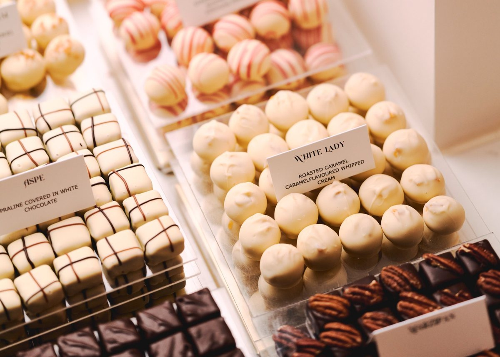
| 営業時間 | 火〜日 10:00〜18:00 |
|---|---|
| 定休日 | 月曜 |
| 住所 | Katelijnestraat 5, 8000 Brugge |
| 予約 | 不要 — ☎ +32 50 33 08 87 ／ 公式サイト |
| 乳児連れ | ベビーカー入店 未確認／ハイチェア 未確認／おむつ替え台 未確認 |
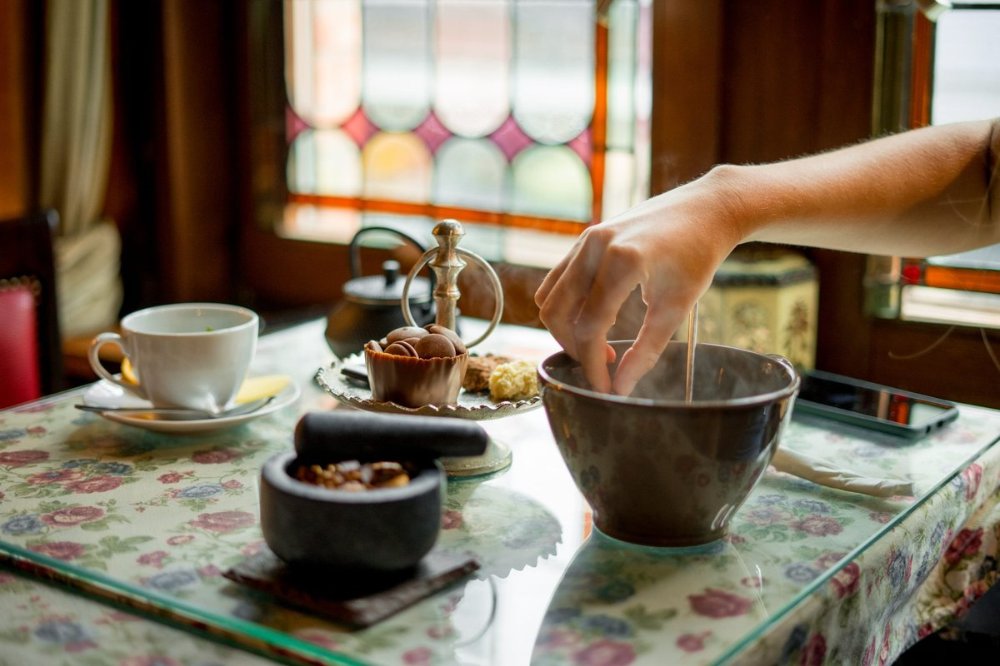
| 営業時間 | ショップ 10:00〜18:00／ティールーム 10:00〜17:30（水曜以外の毎日） |
|---|---|
| 定休日 | 水曜 |
| 住所 | Mariastraat 1, 8000 Brugge |
| 予約 | 不要 — ☎ +32 50 34 01 02 ／ 公式サイト |
| 乳児連れ | ベビーカー入店 可／ハイチェア 未確認／おむつ替え台 未確認 出典 |
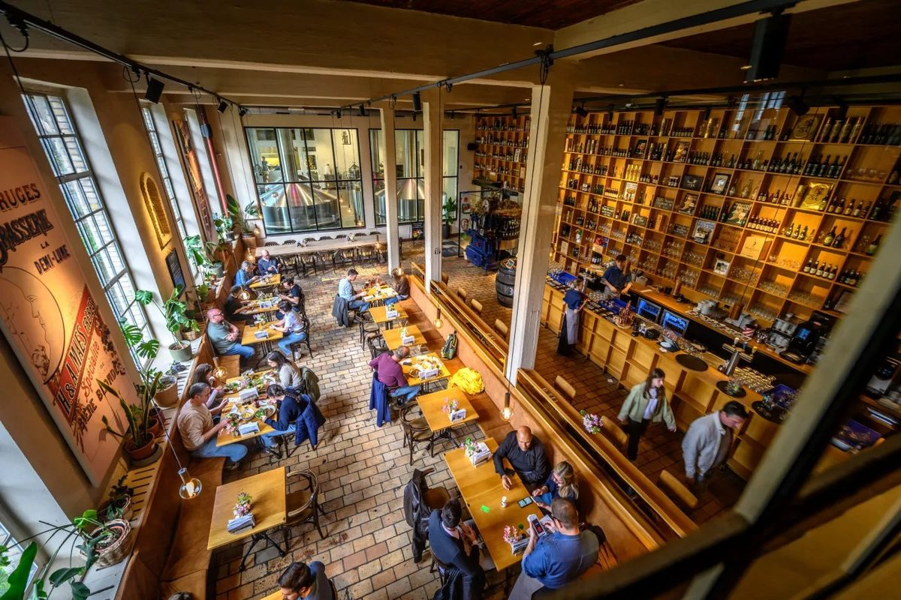
| 営業時間 | レストラン：月〜水・日 12:00〜15:00／木〜土 12:00〜15:00・18:00〜21:00（バー：月〜水・日 11:00〜18:00、木〜土 11:00〜21:00）。見学ツアーは毎日（Visit Bruges 掲載の施設時間 月〜木・日 11:00〜18:00／金土 11:00〜22:00、1月は短縮） |
|---|---|
| 定休日 | なし（クリスマスイブ・大晦日は早仕舞い、1月は短縮営業） |
| 住所 | Walplein 26, 8000 Brugge |
| 予約 | 不要 — ☎ +32 50 44 42 22 ／ 公式サイト ／ 予約サイト |
| 乳児連れ | ベビーカー入店 未確認／ハイチェア あり／おむつ替え台 あり 出典 |
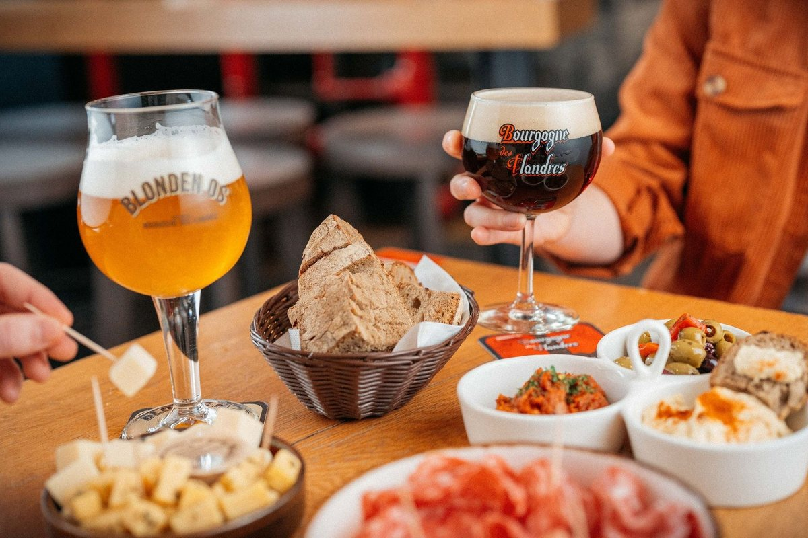
| 営業時間 | 火〜日 10:30〜18:30（バー・テラス・見学受付とも） |
|---|---|
| 定休日 | 月曜（学校休暇中は月曜も営業）。1月後半は年次休業 |
| 住所 | Wollestraat 26, 8000 Brugge（醸造所本体は Kartuizerinnenstraat 6） |
| 予約 | 可 — ☎ +32 50 33 51 06 ／ 公式サイト |
| 乳児連れ | ベビーカー入店 可／ハイチェア 未確認／おむつ替え台 あり 出典 |
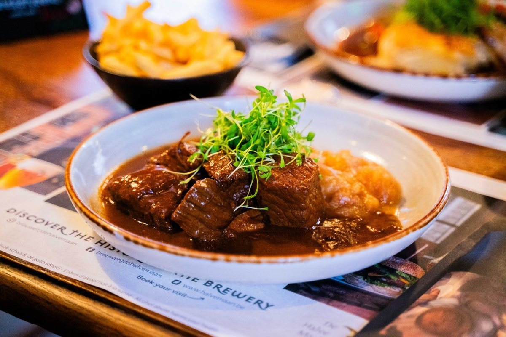
| 営業時間 | 月〜日 11:00〜22:00（昼・夜とも営業） |
|---|---|
| 定休日 | なし（年中無休） |
| 住所 | Philipstockstraat 19, 8000 Brugge |
| 予約 | 推奨 — ☎ +32 50 33 23 28 ／ 公式サイト ／ 予約サイト |
| 乳児連れ | ベビーカー入店 未確認／ハイチェア 未確認／おむつ替え台 未確認 |
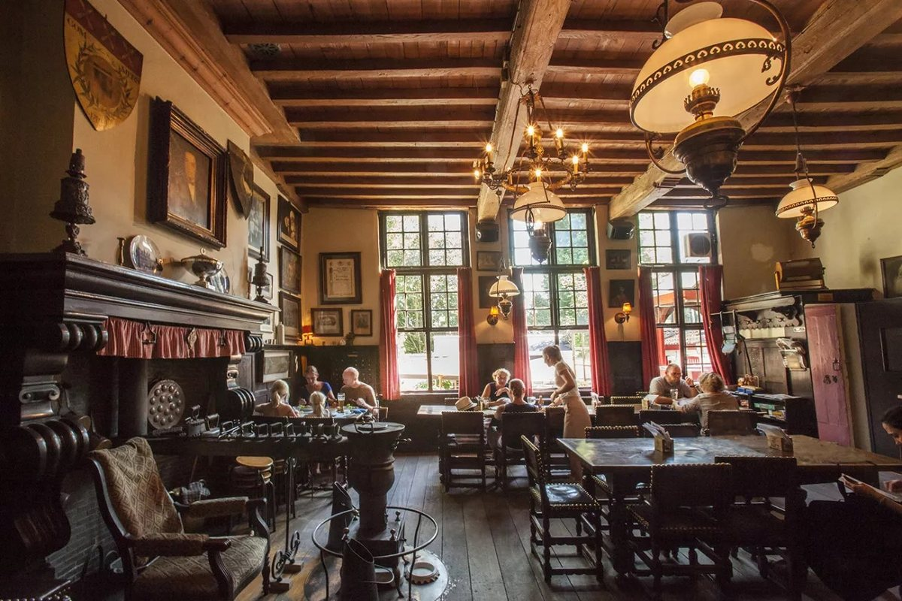
| 営業時間 | 毎日 11:00〜21:00 |
|---|---|
| 定休日 | なし（公式では毎日営業） |
| 住所 | Blekersstraat 2, 8000 Brugge |
| 予約 | 不可 — ☎ +32 50 34 37 37 ／ 公式サイト |
| 乳児連れ | ベビーカー入店 未確認／ハイチェア 未確認／おむつ替え台 未確認 |
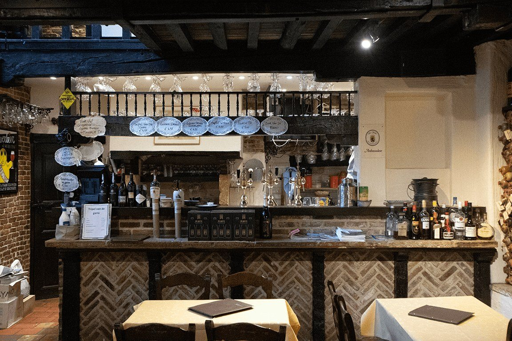
| 営業時間 | 月・火 12:00〜19:00／水〜日 12:00〜23:00 |
|---|---|
| 定休日 | なし（毎日営業） |
| 住所 | De Garre 1, 8000 Brugge |
| 予約 | 不可 — ☎ +32 50 34 10 29 ／ 公式サイト |
| 乳児連れ | ベビーカー入店 未確認／ハイチェア 未確認／おむつ替え台 未確認 |
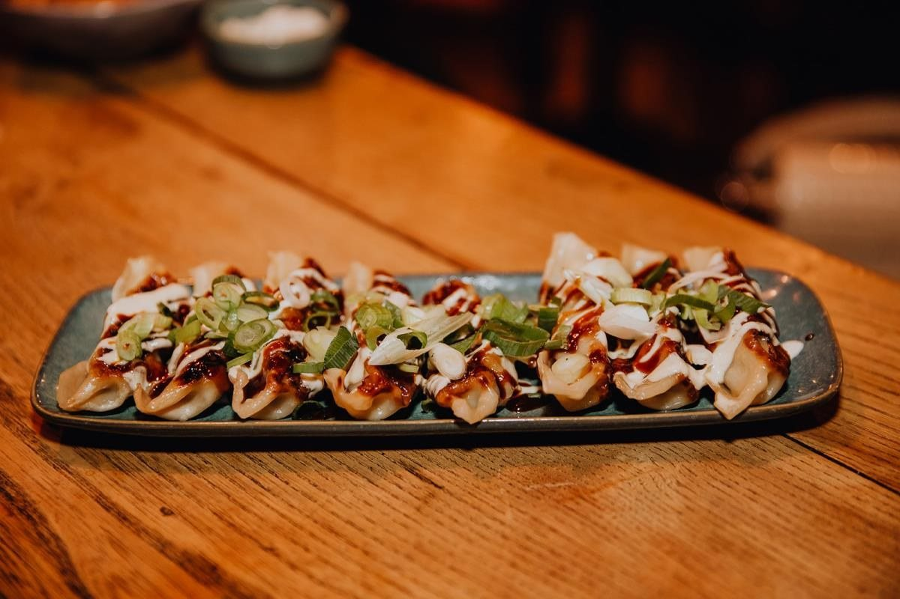
| 営業時間 | 月〜日 16:30〜24:00（ラストオーダーは閉店30分前） |
|---|---|
| 定休日 | なし（毎日営業） |
| 住所 | Cordoeaniersstraat 16, 8000 Brugge |
| 予約 | 推奨 — ☎ +32 50 33 90 51 ／ 公式サイト ／ 予約サイト |
| 乳児連れ | ベビーカー入店 未確認／ハイチェア 未確認／おむつ替え台 未確認 |
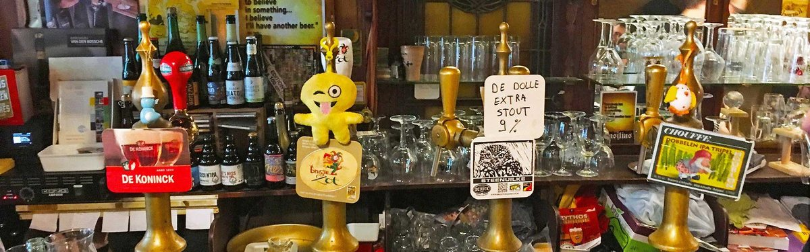
| 営業時間 | 月・火・木・日 16:00〜24:00／金・土 16:00〜翌1:00 |
|---|---|
| 定休日 | 水曜 |
| 住所 | Kemelstraat 5, 8000 Brugge |
| 予約 | 不要 — ☎ +32 50 33 96 16 ／ 公式サイト |
| 乳児連れ | ベビーカー入店 未確認／ハイチェア 未確認／おむつ替え台 未確認 |
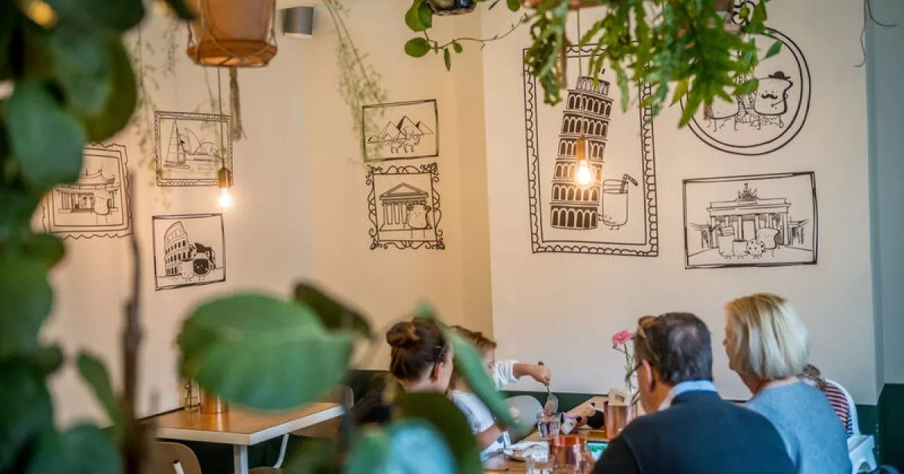
| 営業時間 | 月〜日 8:30〜16:00（公式に「7/7営業」と記載） |
|---|---|
| 定休日 | なし（年中無休と公式記載。祝日・休暇は未確認） |
| 住所 | Dweersstraat 4, 8000 Brugge |
| 予約 | 不可 — ☎ +32 50 68 82 27 ／ 公式サイト |
| 乳児連れ | ベビーカー入店 未確認／ハイチェア 未確認／おむつ替え台 未確認 |
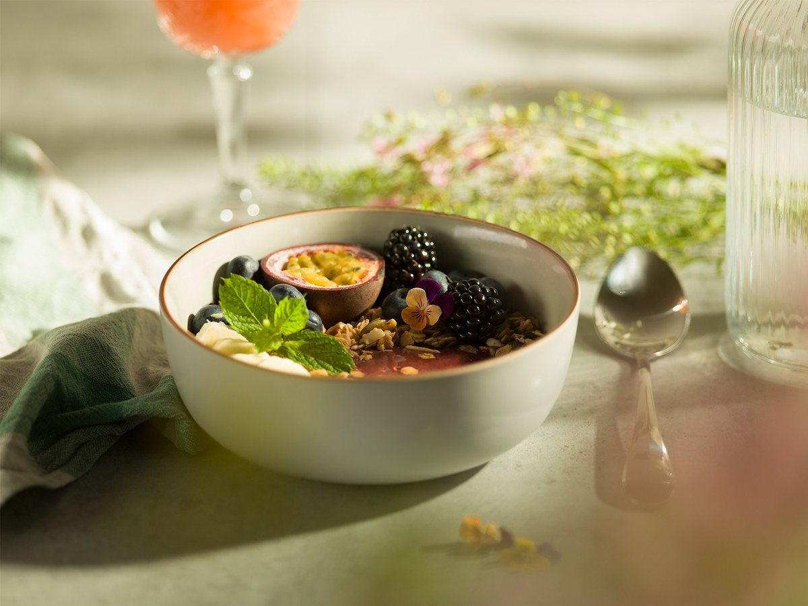
| 営業時間 | 水〜土 8:30〜16:00／日 9:30〜14:00 |
|---|---|
| 定休日 | 月曜・火曜 |
| 住所 | Jan van Eyckplein 7, 8000 Brugge |
| 予約 | 推奨 — ☎ +32 50 34 74 44 ／ 公式サイト |
| 乳児連れ | ベビーカー入店 未確認／ハイチェア 未確認／おむつ替え台 未確認 |
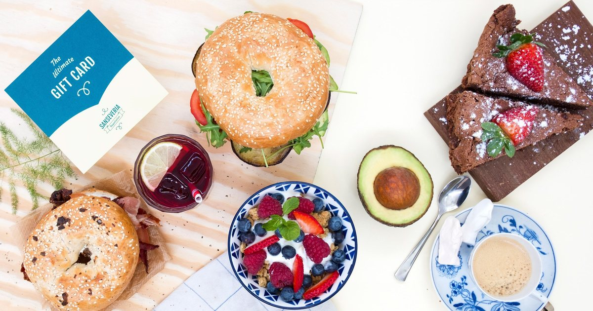
| 営業時間 | 月〜土 8:00〜17:00／日・祝 9:00〜15:00 |
|---|---|
| 定休日 | なし（1月上旬に冬季休暇あり） |
| 住所 | Predikherenstraat 10/12, 8000 Brugge |
| 予約 | 推奨 — ☎ +32 50 34 81 43 ／ 公式サイト ／ 予約サイト |
| 乳児連れ | ベビーカー入店 未確認／ハイチェア 未確認／おむつ替え台 未確認 |
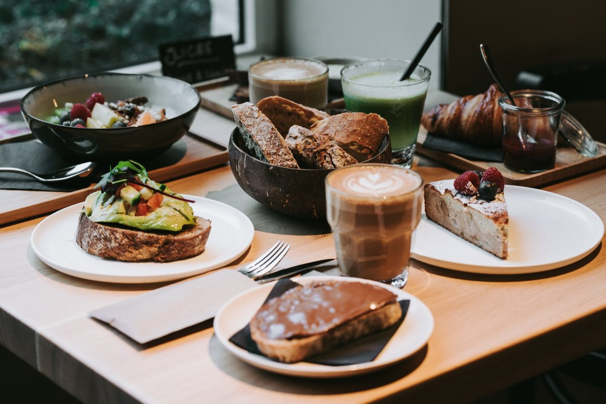
| 営業時間 | 月・火・水・金・土 8:30〜17:00 |
|---|---|
| 定休日 | 木曜・日曜（※日曜休み：訪問は土曜のみ可） |
| 住所 | Zilverpand 7, 8000 Brugge |
| 予約 | 可 — ☎ +32 50 68 66 60 ／ 公式サイト ／ 予約サイト |
| 乳児連れ | ベビーカー入店 未確認／ハイチェア 未確認／おむつ替え台 未確認 |
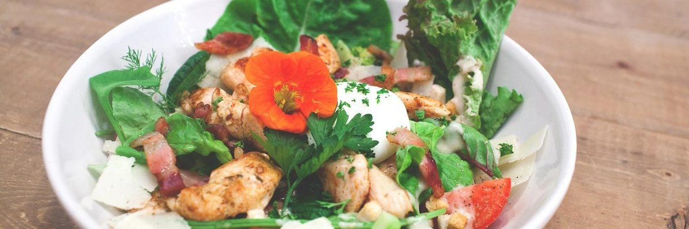
| 営業時間 | 月〜金 9:00〜18:00／土 8:00〜18:00 |
|---|---|
| 定休日 | 日曜・祝日（※日曜休み：訪問は土曜のみ可。2026年は5/14〜17など臨時休業あり） |
| 住所 | 't Zand 12, 8000 Brugge |
| 予約 | 可 — ☎ +32 50 73 64 88 ／ 公式サイト ／ 予約サイト |
| 乳児連れ | ベビーカー入店 未確認／ハイチェア 未確認／おむつ替え台 未確認 |
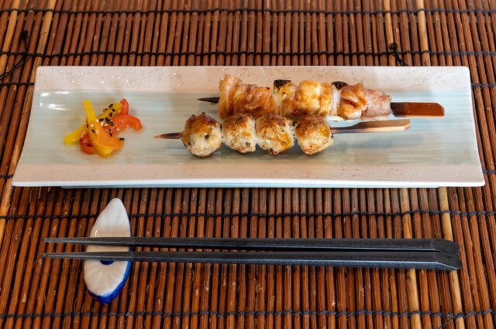
| 営業時間 | 水 昼のみ／木〜土 昼・夜／日 昼のみ（具体的な時刻は未確認） |
|---|---|
| 定休日 | 月曜・火曜（日曜は夜休み） |
| 住所 | Oude Gentweg 1, 8000 Brugge |
| 予約 | 推奨 — ☎ +32 50 34 75 12 ／ 公式サイト ／ 予約サイト |
| 乳児連れ | ベビーカー入店 未確認／ハイチェア 未確認／おむつ替え台 未確認 |
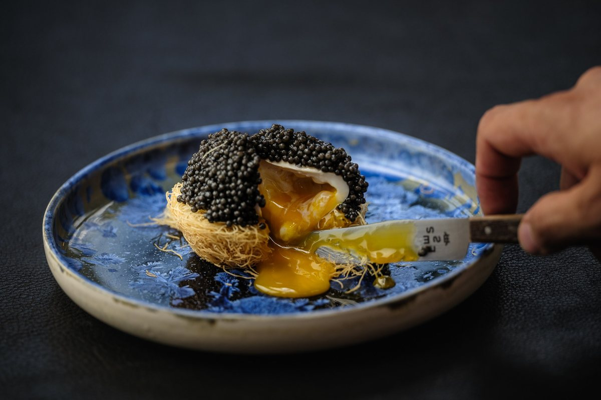
| 営業時間 | 火〜土 12:00〜14:00／18:00〜21:30（木〜土は14:00〜18:00もドリンク＆軽食） |
|---|---|
| 定休日 | 日曜・月曜（※日曜休み：訪問は土曜のみ可） |
| 住所 | 't Zand 21, 8000 Brugge |
| 予約 | 推奨 — ☎ +32 50 69 93 69 ／ 公式サイト ／ 予約サイト |
| 乳児連れ | ベビーカー入店 未確認／ハイチェア 未確認／おむつ替え台 未確認 |
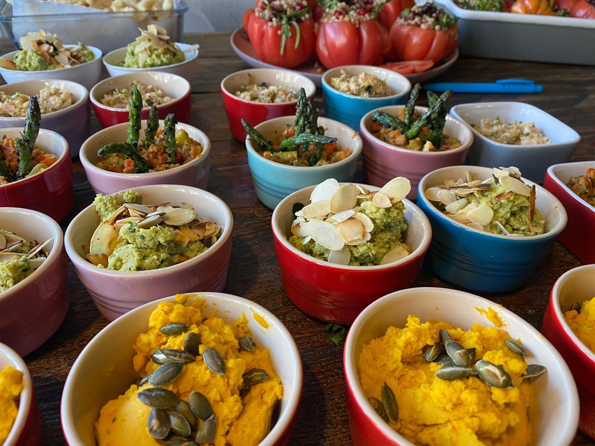
| 営業時間 | 木〜日 16:00〜24:00（キッチンは18:00から） |
|---|---|
| 定休日 | 月曜・火曜・水曜 |
| 住所 | Jozef Suvéestraat 20, 8000 Brugge |
| 予約 | 推奨 — ☎ +32 472 82 40 30 ／ 公式サイト |
| 乳児連れ | ベビーカー入店 未確認／ハイチェア 未確認／おむつ替え台 未確認 |
本ガイドは個人利用目的で作成。掲載情報は2026年9月時点の調査に基づく。写真出典: 各店の公式サイト・Visit Bruges・現地メディア・在住者ブログ（各カードの「写真:」に出典を記載）